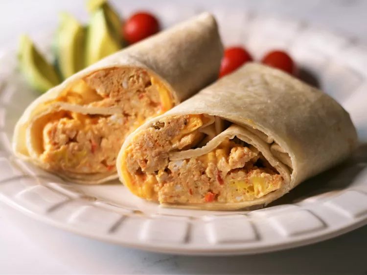

Our Breakfast Burrito

When you are in a hurry, nothing beats a warm breakfast burrito. It's quick and easy, so you will be on your way in no time.
What you will need
- 2 eggs
- 2 tbs salsa
- 1 slice cheese - any variety
- 1 8" tortilla
Steps
- Spray a ceramic bowl with nonstick cooking spray. Crack the eggs into the bowl, add the salsa, and stir. Microwave on high for 1 minute, stir, and cook for another minute or until the mixture firms up.
- Place the cheese in the center of the tortilla and top it with the egg mixture. Wrap it all up like a burrito and head for the car.
* The inspiration and image for this practice recipe comes from allrecipes.com.